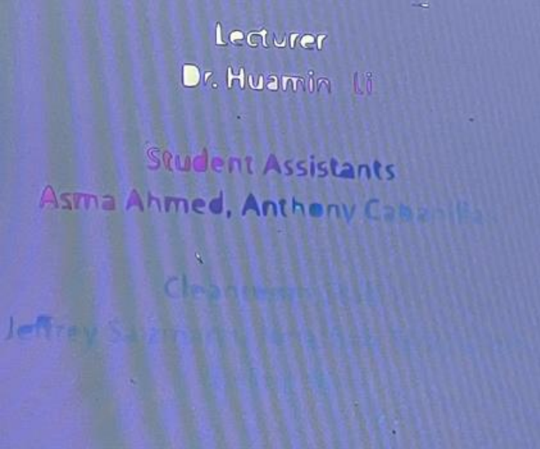

Reflections
EE 519: Industrial Control Systems
An unexpected but absolute favorite. Mathematical modeling, linear algebra, and matlab system simulation sparked a lasting passion for control engineering.Seen above is a cruise control homework problem [3].
Taught by Professor Luis C. Herrera
I registered for EE 519 while working at Moog, Inc. for the summer. Many of my colleagues emphasized the importance of control systems in engineering, especially in applications such as powering motors, aircraft systems, and automation. This encouraged me to explore the subject further. At the time, I had little prior exposure to control theory, and I was unaware that it would become one of the most intellectually stimulating topics I have encountered as a graduate student. This course began one of my greatest recent passions, and perhaps a career.
Throughout the course, I gained a deep understanding of closed-loop control, stability analysis, and system dynamics. I was particularly fascinated by the practical applications of control systems in real-world engineering problems. The rigorous homework assignments and project papers challenged me to apply theoretical concepts, reinforcing my learning and pushing me to think critically about complex problems.
There are some classes where you can sit back, relax, and occasionally provide input when needed. Then, there are other classes that require you to be fully engaged, giving your undivided attention for every minute of the lecture. This course fell into the latter category. Professor Luis Herrera delivered content at a fast pace, requiring students to stay sharp and proactive to keep up with the monsoon of information coming their way. However, this intensity was precisely what made the class rewarding.
Speedometer
Speed: 0 mph
This course taught me two key lessons: first, as an engineer, adaptability and the ability to quickly grasp new topics are critical. I had to push myself to stay ahead, absorb new concepts, and apply them. Second, the course filled gaps in my prior knowledge—while many undergraduate circuits courses briefly touch on closed-loop control, they rarely explore its mathematical foundation in depth. EE 519 bridged that gap by providing a strong theoretical and practical understanding of control systems.
One of the most valuable aspects of the course was its integration of linear algebra concepts, which Professor Herrera reinforced alongside control theory. This helped me solidify my understanding of mathematical models used in system analysis. The combination of control theory and mathematics provided a more holistic view of how systems work.
Figure 0: Beginner's state space system in Matlab and Simulink
This class was finally definitive proof that I would use linear algebra, matlab, differential equations, and physics in my career! It was exciting for me to put all of these skills to use, and understand why the result is important. This state space model could be a control system to stabilize a car, airplane, or a power supply. I can see tangible use cases for the information I learned in this course.
Overall, EE 519 was one of the most challenging yet rewarding courses I have taken. It significantly strengthened my problem-solving skills and deepened my appreciation for control systems. If I had the opportunity to take the course again, I absolutely would—although I might buckle in a bit tighter for the ride. I will always have more to learn in the subject, and that excites me. As of spring of 2025 I am taking even more courses in control with professor Herrera, and I recently accepted a job in controls!
EE 541: Special Topics – Machine Learning and Wireless Edge Networks

This was my first exposure to machine learning and cellular networks. We learned through reading the latest research papers on the topic. Above is a simple depiction of a neural network [1].
Taught by Professor Seyyedali Hosseinalipour
Professor Ali’s classes are my favorite. They are packed with material, interesting, and known to be overwhelming. I enrolled in this course because I knew that every lecture would be packed with valuable and rich information. If nothing else, I would leave this course having learned something new, (and perhaps one of his prized protein shakes). Professor Ali selected some of the latest scientific papers for us to read and discuss in class on the topic of Machine learning and wireless edge networks. It was the first course I have ever taken on machine learning, and the first course I had taken that actively used the latest research in a topic.
At first, I had little interest in the course topic. "Machine learning" sounded like a bunch of computer science concepts that had no relevance to me as an electrical engineer. I was wrong! My biggest concern was that I lacked the background knowledge, or wouldn’t be that interested in ML, but neither of these fears materialized. The reality is machine learning is an integral part of what many engineers do today. The applications go far beyond computer science. I learned the role ML plays in communications technology today.
 Figure 1: Wireless Network Depiction
Figure 1: Wireless Network Depiction
Throughout this course, I was introduced to a vast network infrastructure that enables modern wireless communication. I gained insight into base stations, wireless data transfer, and how machine learning can be integrated into wireless networks. A key takeaway was understanding the role of machine learning in optimizing communication protocols and dynamically adjusting system parameters. For example: Machine learning can be used to set a policy for data uplink and downlink. The problem is devices like our phones have limited energy, and need to send and receive transmissions in an energy conscious manner. Machine learning can be used to monitor the performance of our devices and their communication, come up with adjustments, and integrate those adjustments in real time to optimize the performance of the network.
In this class we recreated simple machine learning algorithms and neural networks through projects and observed their behavior. We coded and ran a neural network, and reinforcement learning on the MNIST dataset. The Modified National Institute of Standards and Technology database, or “MNIST” is a dataset considered a standard for training machine learning technology, and it consists of thousands of images of written numbers from 0 to 9.
Figure 2: Training Accuracy vs Number of Epochs
Something interesting we learned in lab 1 with this dataset is that taking smaller steps toward higher accuracy in detecting the number values in the MNIST dataset has two main effects. It can smoothen the transition between iterations, which is a good thing, but it can also allow the neural network to become stuck in a local maximum. The nature of this data is inherently random, so it is possible and indeed plausible that if I were to make the step size too small, our network will get stuck on something, and we will not get the accuracy we could have gotten! Therefore, while a larger step side is rougher and more random, sometimes finding the right step size and the right parameters for your model needs to be experimented with because of the random nature of human data.
Figure 3: Plots of Accuracy and Loss for Minibatch = 50
For federated learning in project 2, we observed the effect minibatch size has on the swiftness of our model’s convergence to an acceptable accuracy. The following is a conclusion we made in our federated learning laboratory discussing the effect of minibatch size and data heterogeneity: “Both MNIST and Fashion-MNIST benefit from increased data heterogeneity (access to multiple labels per device) and larger mini-batch sizes in federated learning. However, even with these optimizations, Fashion-MNIST struggles to achieve the same level of accuracy as MNIST. This suggests that the inherent complexity of the Fashion-MNIST dataset poses additional challenges that cannot be fully overcome by simply increasing data heterogeneity and mini-batch size.”
This class changed my perspective on both machine learning and communication networks. I learned how machine learning models are used in real time to make cellular networks more efficient. They can improve the performance of a network while the network continues to run, and working within limited bandwidth constraints.
Taking this course was a big leap of faith for me, but I’m incredibly glad I did. I now see machine learning as an integral part of wireless systems rather than an unrelated discipline. What started as a course outside my comfort zone has turned into a topic I actively seek to learn more about every day. I see machine learning and artificial intelligence at work, and I have seen wireless communication fundamentals that I learned in this class throughout the rest of my coursework.
EE 591: Analog Integrated Circuits
Problem solving class sessions, linux-based circuit design and hands-on Cadence labs helped deepen my understanding of analog systems. Above is a depiction of a 741 op amp [2].
Taught by Professor Bibhudatta Sahoo
Analog electronics are the foundation of modern computing, and the birthplace of computing itself. They took us to space, enable cellular communications, laid the groundwork for digital systems, and remain the backbone of all electronics today. Despite the dominance of digital technology, analog design is what enables real-world signals to be processed, transmitted, and controlled. This class deepened my appreciation for that reality while pushing me to develop technical skills, practical design skills, and problem-solving.
This course challenged me in multiple ways. From the rigorous mathematical modeling of transistor behavior to the practical considerations of layout and design, I learned how to analyze and build analog circuits. Concepts such as differential amplifiers, current mirrors, and op-amps became tools I could confidently use.
Figure 4: NMOS Based High Swing Cascode Current Mirror
Beyond circuit theory, this class forced me (somewhat unwillingly) into the world of Linux. I had no choice but to adapt, and in doing so, I navigated Cadence Free PDK, set up design environments, and successfully completed the required projects. This experience gave me confidence in using circuit design tools in any environment, whether in academia or industry.
One of the most valuable takeaways was developing intuition for analog design. Unlike digital systems, where logic gates operate with binary certainty, analog circuits require a deep understanding of trade-offs—power, noise, bandwidth, stability. Completing the projects helped me internalize these trade-offs, making me a more effective engineer. At work I see engineers who can take one look at a IV curve and know exactly how a design improves over it’s predecessor. I can say I have gotten closer to that level of proficiency by one step.
Figure 5: NMOS Based Cascode Current Mirror Characteristics
I learned to interpret and make comparative analyses of circuits, putting together test graphs such as those in figure 5. Peak Accuracy, Theoretical vs real output/input impedance, compliance voltage, mirroring accuracy, and swing are all important parameters one needs to understand for current mirror performance.
Like many students in this course, I faced some challenges. The complexity of analog circuit analysis can be overwhelming, especially when dealing with non-ideal components. Learning to use Linux-based design tools added an additional layer of difficulty, but overcoming these challenges made me a more adaptable engineer. Professor Sahoo would often throw in an error in our circuits that students would need to fix. This was particularly challenging in a software that was foreign to me. I am glad he included these errors because they stretched my abilities and forced me to grow as an engineer.
Having completed this course, I now feel equipped with the basics to design analog circuits. I have the technical skills to approach complex designs and the practical experience of troubleshooting and optimizing real-world circuits. I have used what I learned in this course at work! At work I had large circuit schematics with thousands of components sitting in front of me to decipher. I was able to identify what I understood, box in power supplies, and ask my superior about what I did not know. More importantly, I gained an appreciation for the elegance of analog design. Analog is art. It needs to be symmetrical, and the result is often beautiful.
I would absolutely take this course again. It was tough, but it solidified my passion for analog electronics. With the skills I gained, I am now prepared to tackle more advanced circuit design challenges. This course did not just teach me analog circuits, it gave me a mindset that will stay with me throughout my engineering career. As an engineer there are problems without answers that you must find the answers to. Courses like these are tools on my toolbelt I can use in the future when it comes to design and analysis.
EE 553: Microelectronics Fabrication Lab
Cleanroom experience and hands-on fabrication of silicon devices shaped my view of modern electronics. Seen above are clean prepped silicon wafers, and etched wafers ready for testing.
Taught by Professor Huamin Li
This class was unique in that it was just as much an experience as it was an academic pursuit. It was one of the few courses where I wasn’t just learning about semiconductor fabrication—I was living it.
If given the opportunity to visit a silicon wafer fabrication facility, every electrical engineer should take it. Seeing semiconductor fabrication firsthand changes your perception of what goes into making the technology we take for granted. Until you physically handle doped silicon wafers, etch microscopic transistors, and witness photolithography in action, it’s all just theoretical PowerPoint slides.
One of my favorite new things in this course was adapting to cleanroom protocols. The experience of suiting up in full cleanroom attire never lost its novelty. There is something exhilarating about working in a high-tech fabrication environment, surrounded by millions of dollars in specialized equipment, even if you aren’t directly manipulating the final product with your hands.
This course mattered because it taught me what it actually takes to create silicon devices. It wasn’t just a SPICE simulation or theoretical discussion in a textbook—we physically grew, sliced, doped, and tested silicon wafers. Without this hands-on experience, it is difficult to truly appreciate how modern computing hardware is manufactured.
Figure 7: Cutting Silicon
I challenge the reader to visualize the journey of a microchip—from raw sand to a smartphone processor, from copper traces to a printed circuit board. That chip needs to start as harvested silicon, purified, grown, sliced, doped, etched, metal coating, lithography etc. That’s to name just a few. Thanks to this course, I can picture that entire journey, and I will each time I design a silicon-based circuit. Can you?
Something interesting my partner Marcus and I found in our lithography and gold coating project was the presence of nanoparticle gold on the surface of our silicon via covering of the gold coating in process.
Figure 8: Gold Coating Gradient
This is particularly interesting because it could be a possible avenue for having more resistant-to-coat metals like aluminum to stick better to silicon when needed. We recognized that this gold was in such a concentration because of how gold is used in stained glass. Reds and purples can be made simply by changing the concentration of nanoparticle gold!
Figure 9: Gold Nanoparticles of varying particle sizes.
I started this electrical engineering journey in my grandfather’s basement when I was six years old. I toyed with old computers and electronics, took apart power supplies for their wires and capacitors, and used the motors in CD trays for little Rube Goldberg machines. Sure… trusting a kid with lead solder is a big ask, but playing with circuits and simply creating whatever my imagination wanted remains my greatest memory to date (Thanks Papa!). Today when I do hands on work I feel the same was as I did years ago taking apart a computer when I was six years old.
Figure 10: Alexander and Marcus Francisco
My job and interests may change, but my passion for electronics will not. Whether or not I pursue semiconductor fabrication as a career, this course solidified my love for hands-on work. When I tell employers that I’ve physically worked in a fabrication lab, they recognize the value of that experience. It’s not just something to put on a resume—it’s something that fundamentally shaped my understanding of electronics.
There is no doubt in my mind that a cleanroom will be in my future. I will take what I learned here wherever I go in life.